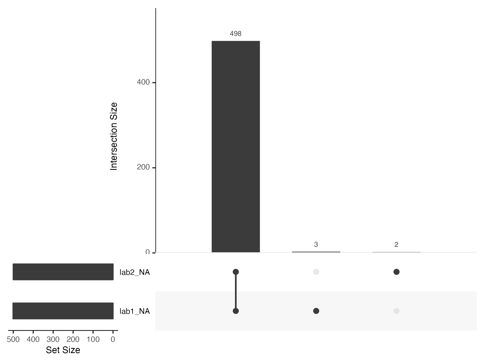

Multivariate missingness and monotonicity
Janick Weberpals
multivariate_missingness.RmdMultivariate missing data in smdi
In this article, we want to briefly highlight two aspect regarding multivariate missingness:
How does
smdihandle multivariate missingness?What is the link between missing data patterns and missing data mechanisms and how does this affect the behavior and performance of the
smdifunctionality?
How does smdi handle multivariate missingness?
In all smdi functions, except
smdi_little(), binary missing indicator variables are
created for each partially observed variable (either specified by the
analyst using the covar parameter or automatically
identified via smdi_check_covar() if covar =
NULL) and the columns with the actual variable values are dropped. For
the variable importance visualization in smdi_rf(), these
variables are indicated with “_NA” suffix. Missing values are
accordingly indicated with a 1 and complete observations with a
0. This functionality is controlled via the
smdi_na_indicator() utility function.
smdi_data %>%
smdi_na_indicator(
drop_NA_col = FALSE # usually TRUE, but for demonstration purposes set to FALSE
) %>%
select(
ecog_cat, ecog_cat_NA,
egfr_cat, egfr_cat_NA,
pdl1_num, pdl1_num_NA
) %>%
head() %>%
gt()| ecog_cat | ecog_cat_NA | egfr_cat | egfr_cat_NA | pdl1_num | pdl1_num_NA |
|---|---|---|---|---|---|
| 1 | 0 | NA | 1 | 45.03 | 0 |
| NA | 1 | 0 | 0 | NA | 1 |
| 0 | 0 | 1 | 0 | 41.74 | 0 |
| 1 | 0 | NA | 1 | 45.51 | 0 |
| NA | 1 | 1 | 0 | 31.28 | 0 |
| 0 | 0 | NA | 1 | NA | 1 |
Now, let’s assume we have three partially observed covariates
X, Y and Z, which we would like to include in
our missingness diagnostics. All smdi_diagnose() functions,
except smdi_little(), create X_NA, Y_NA
and Z_NA and X, Y and Z are
discarded from the dataset. The functions will then iterate the
diagnostics through all X_NA, Y_NA and Z_NA
one-by-one. That is, if, for example, if X_NA is assessed,
Y_NA and Z_NA serve as predictor variables along with
all other covariates in the dataset. If Y_NA is assessed,
X_NA and Z_NA are included as predictor variables, and
so forth.
Important! It is important to notice that this
strategy is the default to deal with multivariate missingness in the
smdi package, however, another possible approach could be
to not consider the other partially observed variables in the
first place (e.g. by dropping them before applying any smdi
function) and stacking the diagnostics focusing on one partially
observed variable at a time. Such a strategy would be advisable in
scenarios of monotone missing data patterns (see next section).
smdi in case of monotone missing data patterns
While in the smdi package we mainly focus on missing
data mechanisms, missing data patterns always need to be considered,
too. Please refer to the routine
structural missing data diagnostics article, where we highlight the
importance of describing missingness proportions and patterns before
running any of the smdi diagnostics.
As mentioned in the section before, in case of monotone missing data
patterns, the smdi functionality may be misleading.
A missing data pattern is said to be monotone if the variables Yj can be ordered such that if Yj is missing then all variables Yk with k > jare also missing (taken from Stef van Buuren 1).
A good example for monotone missing data could be clinical blood laboratory tests (“labs”) which are often tested together in a lab panel. If one lab is missing, typically the other labs of this panel are also missing.
# we simulatea monotone missingness pattern
# following an MCAR mechanism
data_monotone <- smdi_data_complete %>%
mutate(
lab1 = rnorm(nrow(smdi_data_complete), mean = 5, sd = 0.5),
lab2 = rnorm(nrow(smdi_data_complete), mean = 10, sd = 2.25)
)
data_monotone[3:503, "lab1"] <- NA
data_monotone[1:500, "lab2"] <- NA
smdi::gg_miss_upset(data = data_monotone)
smdi::md.pattern(data_monotone[, c("lab1", "lab2")], plot = FALSE)
#> lab2 lab1
#> 1997 1 1 0
#> 3 1 0 1
#> 2 0 1 1
#> 498 0 0 2
#> 500 501 1001In extreme cases of perfect linearity, this can lead to multiple
warnings and errors such as system is exactly singular or
-InfWarning: Variable has only NA's in at least one stratum.
In cases in which monotonicity is still clearly present but not as
extreme (like in the example above), smdi will prompt a
message to the analyst to raise awareness of this issue as the
smdi output can be highly misleading in
such instances.
diagnostics_jointly <- smdi_diagnose(
data = data_monotone,
covar = NULL, # NULL includes all covariates with at least one NA
model = "cox",
form_lhs = "Surv(eventtime, status)"
)
#> Important note:
#> AUC for predicting covariate lab1 is very high (>0.9).
#> Predictor with highest importance: lab2_NA.
#> Check for potentially underlying monotone missing data pattern.
#> Important note:
#> AUC for predicting covariate lab2 is very high (>0.9).
#> Predictor with highest importance: lab1_NA.
#> Check for potentially underlying monotone missing data pattern.
diagnostics_jointly %>%
smdi_style_gt()| Covariate | ASMD (min/max)1 | p Hotelling1 | AUC2 | β crude (95% CI)3 | β (95% CI)3 |
|---|---|---|---|---|---|
| lab1 | 0.060 (0.008, 0.265) | <.001 | 0.998 | -0.01 (95% CI -0.12, 0.09) | 1.06 (95% CI 0.01, 2.11) |
| lab2 | 0.054 (0.003, 0.082) | <.001 | 0.993 | -0.03 (95% CI -0.14, 0.08) | -1.11 (95% CI -2.16, -0.05) |
| p little: 0.219, Abbreviations: ASMD = Median absolute standardized mean difference across all covariates, AUC = Area under the curve, β = beta coefficient, CI = Confidence interval, max = Maximum, min = Minimum | |||||
| 1 Group 1 diagnostic: Differences in patient characteristics between patients with and without covariate | |||||
| 2 Group 2 diagnostic: Ability to predict missingness | |||||
| 3 Group 3 diagnostic: Assessment if missingness is associated with the outcome (crude, adjusted) | |||||
In such cases, it may be advisable to not consider including lab2 in the missingness diagnostics of lab1 and vice versa and stack the diagnostics focusing on one partially observed variable at a time.
Lab 1 analyzed without Lab 2
# lab 1
lab1_diagnostics <- smdi_diagnose(
data = data_monotone %>% select(-lab2),
model = "cox",
form_lhs = "Surv(eventtime, status)"
)
lab1_diagnostics %>%
smdi_style_gt()| Covariate | ASMD (min/max)1 | p Hotelling1 | AUC2 | β crude (95% CI)3 | β (95% CI)3 |
|---|---|---|---|---|---|
| lab1 | 0.050 (0.008, 0.083) | 0.296 | 0.500 | -0.01 (95% CI -0.12, 0.09) | -0.04 (95% CI -0.15, 0.07) |
| p little: 0.236, Abbreviations: ASMD = Median absolute standardized mean difference across all covariates, AUC = Area under the curve, β = beta coefficient, CI = Confidence interval, max = Maximum, min = Minimum | |||||
| 1 Group 1 diagnostic: Differences in patient characteristics between patients with and without covariate | |||||
| 2 Group 2 diagnostic: Ability to predict missingness | |||||
| 3 Group 3 diagnostic: Assessment if missingness is associated with the outcome (crude, adjusted) | |||||
Lab 2 analyzed without Lab 1
# lab 2
lab2_diagnostics <- smdi_diagnose(
data = data_monotone %>% select(-lab1),
model = "cox",
form_lhs = "Surv(eventtime, status)"
)
lab2_diagnostics %>%
smdi_style_gt()| Covariate | ASMD (min/max)1 | p Hotelling1 | AUC2 | β crude (95% CI)3 | β (95% CI)3 |
|---|---|---|---|---|---|
| lab2 | 0.051 (0.003, 0.082) | 0.291 | 0.500 | -0.03 (95% CI -0.14, 0.08) | -0.05 (95% CI -0.16, 0.06) |
| p little: 0.233, Abbreviations: ASMD = Median absolute standardized mean difference across all covariates, AUC = Area under the curve, β = beta coefficient, CI = Confidence interval, max = Maximum, min = Minimum | |||||
| 1 Group 1 diagnostic: Differences in patient characteristics between patients with and without covariate | |||||
| 2 Group 2 diagnostic: Ability to predict missingness | |||||
| 3 Group 3 diagnostic: Assessment if missingness is associated with the outcome (crude, adjusted) | |||||
Presented in one table using smdi_style_gt()
We can also combine
# computing a gloabl p-value for Little's test including both lab1 and lab2
little_global <- smdi_little(data = data_monotone)
# combining two individual lab smdi tables and global Little's test
smdi_style_gt(
smdi_object = rbind(lab1_diagnostics$smdi_tbl, lab2_diagnostics$smdi_tbl),
include_little = little_global
)| Covariate | ASMD (min/max)1 | p Hotelling1 | AUC2 | β crude (95% CI)3 | β (95% CI)3 |
|---|---|---|---|---|---|
| lab1 | 0.050 (0.008, 0.083) | 0.296 | 0.500 | -0.01 (95% CI -0.12, 0.09) | -0.04 (95% CI -0.15, 0.07) |
| lab2 | 0.051 (0.003, 0.082) | 0.291 | 0.500 | -0.03 (95% CI -0.14, 0.08) | -0.05 (95% CI -0.16, 0.06) |
| p little: 0.219, Abbreviations: ASMD = Median absolute standardized mean difference across all covariates, AUC = Area under the curve, β = beta coefficient, CI = Confidence interval, max = Maximum, min = Minimum | |||||
| 1 Group 1 diagnostic: Differences in patient characteristics between patients with and without covariate | |||||
| 2 Group 2 diagnostic: Ability to predict missingness | |||||
| 3 Group 3 diagnostic: Assessment if missingness is associated with the outcome (crude, adjusted) | |||||
Since the missingness follows an MCAR mechanism,
smdi_diagnose() now shows the expected missingness
diagnostics patterns based on an MCAR mechanism.